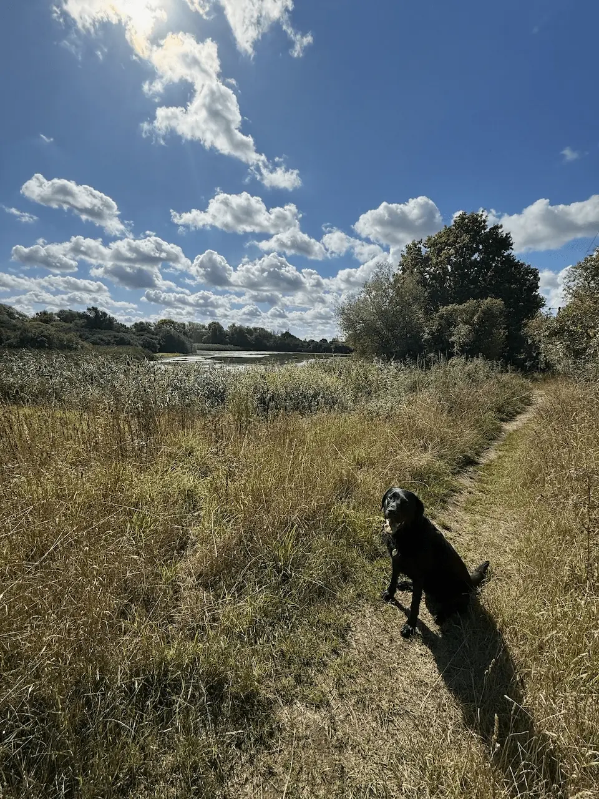

Chigborough Lakes Circular
Circular
There are 2 km of circular trails to enjoy with benches to stop at, enjoy the views and listen to the wildlife.
Honest ratings, so you can decide in seconds whether it suits your dog.
How we rate this
How we rate this
How we rate this
How we rate this
How we rate this
How we rate this
How we rate this
How we rate this
See what it actually looks like before you go.



Circular
Already heading to Heybridge? Filter and sort the dog-friendly places other local owners pair with this walk.
They are a Farm Cafe dedicated to serving Michelin-style dishes crafted with the best local produce they can source. Whether you're joining them for a leisurely brunch, tea and cake or a casual dinner, they promise to deliver something delicious.
A dog-friendly coastal café with stunning estuary views, all-day breakfasts and a menu celebrating local, seasonal ingredients.
A dog-friendly pub at Heybridge Basin with estuary views, a seafood bar and plenty of outdoor space to relax after a walk.
A family-friendly quayside pub serving freshly cooked food and real ales, with a large waterside patio overlooking the Blackwater Estuary.
A charming tea room serving hearty breakfasts, homemade lunches and signature afternoon teas, with beautifully themed rooms and a dog-friendly courtyard.
A dog-friendly café at Tom's Farm Shop serving traditional breakfasts, homemade cakes and its speciality smoked menu.
A traditional country pub overlooking Little Braxted village green, serving homemade pub classics with a large beer garden and cosy log fires.
A traditional tea room set within the historic Wilkin & Sons jam factory, serving hearty breakfasts, classic lunches, cream teas and homemade favourites alongside the story of Tiptree's famous jam-making heritage.
A friendly independent café in the heart of Tiptree, perfect for watching village life go by.
A friendly independent coffee shop serving fresh sandwiches, wraps, homemade cakes, loaded hot chocolates and great coffee.
The Red Dog is a quality burger and breakfast restaurant based in the small village of Inworth, close to Tiptree, Feering and Kelvedon.
Traditional country pub with a large garden, classic pub food and popular Sunday roasts.
An award-winning family-run pub on the River Blackwater, serving traditional homemade food made with locally sourced ingredients.
Nestled in the charming Essex village of Feering, The Sun Inn has welcomed travellers, locals and wandering souls for centuries.
A historic Elizabethan pub serving seasonal British dishes, local ales and a spacious garden for relaxing with family and friends.
Cosy village café serving locally roasted coffee, homemade cakes, brunch and lunch.
Traditional village pub overlooking Danbury Common, serving classic pub food, real ales and Sunday lunches.
A dog-friendly village pub with cosy open fires, quality food and easy access to the surrounding Essex countryside and walking trails.
A family-run village pub serving fresh, locally sourced food, local real ales and cocktails, with a warm welcome for dogs.
A welcoming riverside pub and restaurant overlooking the Blackwater Estuary, serving breakfast, lunch and dinner using fresh local produce. Famous for its seafood, homemade dishes and estuary views, The Coast Inn also offers customer parking and dog-friendly outdoor seating.
A cosy, family-run tea room in West Mersea serving homemade food, cakes and drinks. Dogs are welcome, and outdoor seating is available on sunny days.
A cosy village pub in the heart of West Mersea serving lunch, dinner and drinks, with six guest rooms for overnight stays. Just a short walk from the beach, it's a great place to relax before or after exploring the island.
Other dog-friendly walks within easy reach of Chigborough Lakes Nature Reserve.
From local dog owners who've walked it.
★ This walk doesn't have any community tips yet.
Know something that would help another dog owner?
We'd love your help keeping Dogs of Essex accurate and up to date.
Managed by Essex Wildlife Trust.